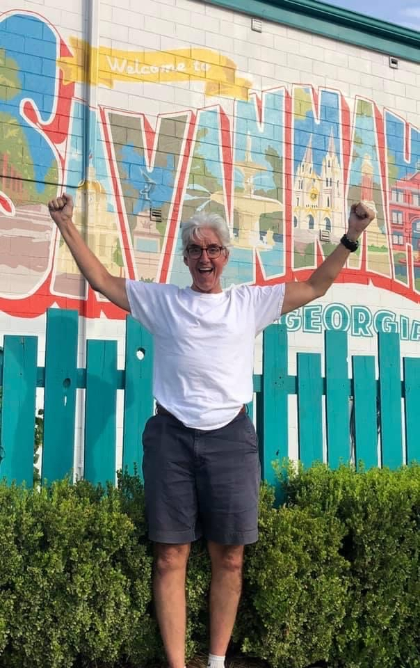

David Murray
Welcome
This archive was created to preserve the life and memories of David Brian Murray — my dad.
He was a free spirit in the truest sense. A cyclist, a professor, a friend, and one of those rare people who made wherever he was feel like exactly the right place to be. My dad had a gift that's hard to put into words. He remembered the details of your life, listened when you spoke, and made you feel genuinely seen. He loved loudly, he loved big, and he never wasted a single day.
In the spring and summer of 2024, my dad embarked on a cross-country bicycle journey he called the Muzz America Tour. Along the way, he documented the ride daily — capturing the moments of pure exhaustion and pure joy, and all the beautiful chaos that seemed to find him wherever he went.
But more than anything, he made these videos to stay connected to the people he loved. Each one was a love letter from the road; a way of saying I'm here, I'm alive, and I'm thinking of you. Many of them include personal shout-outs, where my dad paused to share the story of why someone in his life mattered to him. If he shouted you out along the way, consider it a love letter. That was just who he was.
What I didn't know then was that these videos would become one of the most precious gifts I'd ever be given. Recorded just one month before his passing, they are the last chapter of a life lived fully; his voice, his laugh, his heart, as if he just stepped into another room.
This is a place where that chapter lives. Open to anyone who loved him, knew him, rode alongside him, or simply wants to understand what it looked like when someone chose to live unapologetically and love fiercely every single day.
These videos have brought me a tangible connection to my dad, and I hope they do the same for you. Whenever you miss him, come here. That's what this is for. My hope is that this space gives you what it has given me, a way back to him whenever you need it.
🍀
— Van Morrison